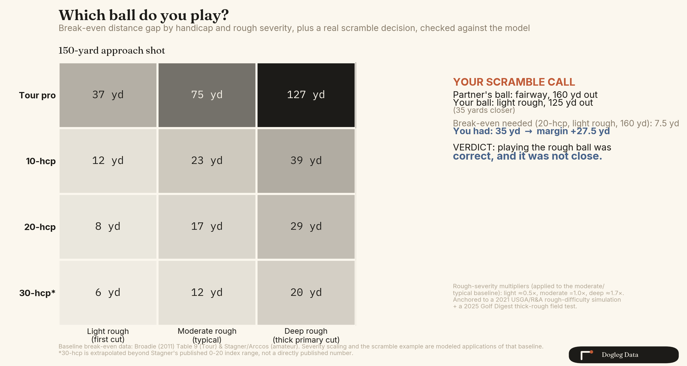
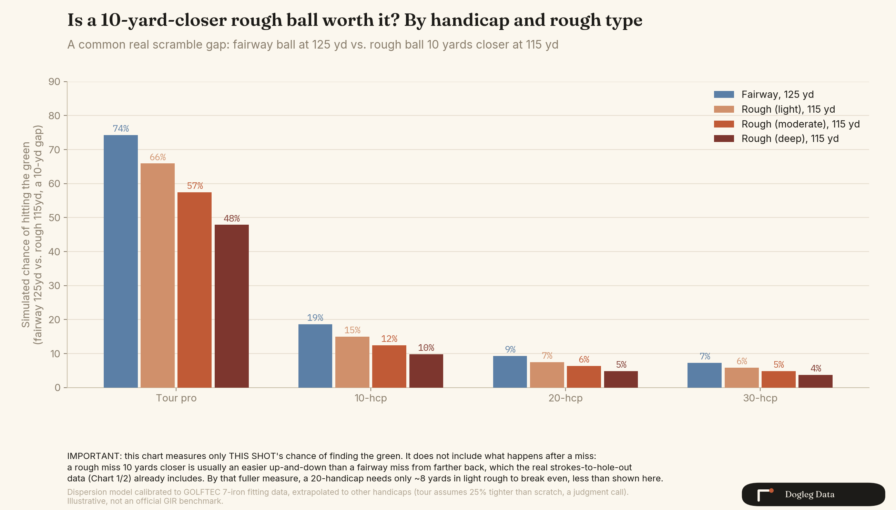
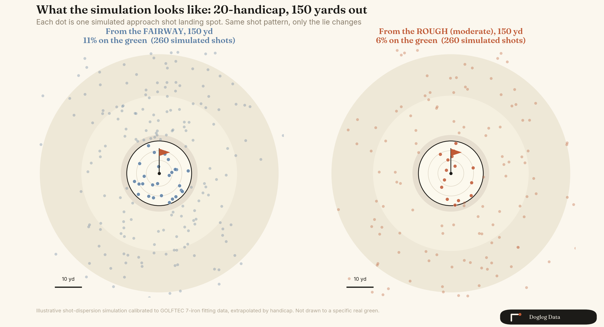
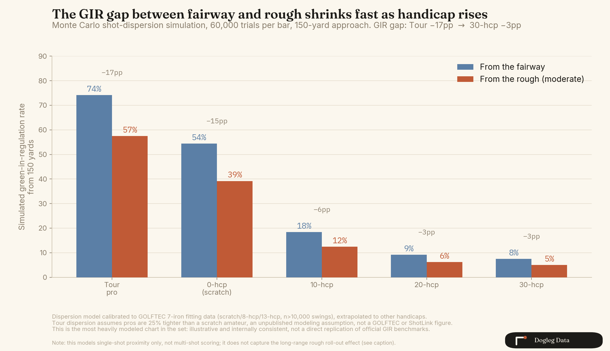

Fairway or rough. Which ball do you play in a scramble?
Golf course wisdom says stay in the fairway, even 25 yards back. I ran the real data by handicap, and the advice holds for one group of golfers: the ones getting paid to play.

The fairway's worth, by handicap
At a 150-yard approach, the fairway is worth 75 yards to a tour pro. That means a rough ball has to be 75 yards closer to tie a pro's fairway ball at 150. It peaks even higher, around 80 yards, for a shot from 140 out. The "stay in the fairway" rule was built around numbers like that one.
For the rest of us, that same fairway is worth a lot less. At 150 yards, it's worth 23 yards to a 10-handicap, 17 to a 20, and 12 to a 30modeled.
A flat scoring curve inflates the pro number
I assumed going in that amateur shots are too erratic for lie to matter much. The explanation turned out to live in the shape of the pro's scoring curve.
A tour pro's rough penalty is close to the same everywhere on the course, somewhere between 0.16 and 0.25 strokes. But between 60 and 140 yards, a pro's score changes little with distance. They're about as good from 90 as from 60. So a small, constant penalty gets divided by an almost-flat scoring curve, and the yardage needed to cancel it out balloons to 75 or 80 yards.
Amateurs never get that flat stretch. Every extra yard costs them more score, at every distance, so the same size penalty gets canceled out by far fewer yards.
Tour rough and muni rough are different plants
One caveat before you carry that pro number everywhere: rough height is a weak stand-in for how punishing rough plays. On paper the cuts overlap, with tour rough at regular events running about 2 inches and municipal rough running 1.75 to 2.5. The agronomy tells a different story.
At Oak Hill's 2023 PGA Championship, the rough measured about 2.75 inches, in the same range as a municipal course, and it still wrecked shots, because the grass stood upright and the blades ran wide. Oakmont's crew builds that effect through fertilizer programs that thicken the turf stand over months, a variable no height number captures. Shinnecock adds a whole second category: about 125 acres of native fescue, sedge, and bluestem outside the primary rough, closer to knee-high than 2 inches, where a ball is often lost rather than found.
Broadie's numbers come from regular-season Tour events. Majors sit outside the sample, and regular Tour rough, thick as it is, skips that density program. The 75 to 80 yard figure was never built from U.S. Open rough, and this dataset can't say how much harder U.S. Open rough plays. Chart 2's "deep rough" column is anchored to a muni-style thick cut for the same reason.
The wedge sweet spot
Amateur wedge play has its own pattern, the one golfers describe as the point where a comfortable partial wedge turns into a full swing and consistency drops off. The data backs most of that feeling up.
Stagner's Arccos database tracks proximity as a percentage of starting distance, by handicap, fairway shots only. Every group I checked, 0, 10, and 20 handicap, has the same shape: proximity control improves toward a sweet spot around 115 to 135 yards, then decays past it. Shots inside 100 yards lose accuracy relative to their distance too, so the true shape is a U rather than a cliff.
The far side of that sweet spot is where handicap bites. A scratch player's relative proximity about doubles between the sweet spot and 220 yards. A 20-handicap's more than doubles again on top of that. Chart 1's third panel plots this next to the tour mechanism, so you can see both side by side.
Rough type changes the call
For a 20-handicap at 150 yards, the fairway is worth 8 yards in light rough, 17 in moderate rough, and 29 in a thick primary cut. That last number is still a muni-course "deep rough"; true U.S. Open native fescue would play harder, and this model lacks the data to size it. Same player, same distance, different call depending on the grass.

I hit this exact spot in a scramble last weekend. My ball sat in light rough, 35 yards closer than my partner's fairway ball. Two of my partners wanted the fairway ball. The model says an 8-yard edge is enough for a 20-handicap in light rough, and I had 35. It wasn't close. Chart 2 walks through the math.
Don't take my scramble read on faith. Run yours.
The tools page behind this post is the working model itself. Drag your own distance and handicap through it.
- Break-even explorer: how many yards the fairway is worth, at any distance and handicap
- Monte Carlo GIR simulator: simulated odds of hitting the green from a lie you pick
- Scramble calculator: enter both lies, get the call
The 240-yard crossover
One more finding, and this one needed no modeling at all: in Lou Stagner's published Arccos data, a 20-handicap's rough ball at 240 to 250 yards scores better than a fairway ball at the same distance, and a 15-handicap crosses the same line at 250. Past that range, neither ball is reaching the green, and the rough ball is rolling out farther with less spin.
I tried to confirm this a second way, by adding a distance-dependent bias to the Monte Carlo model, and the simulation failed to reproduce it. The simulation only tracks where one shot lands, and at higher-handicap dispersion levels a few yards of bias gets buried in the noise. So the crossover rests on the real scoring data alone.
The realistic 10-yard gap
A 35-yard gap made my scramble call easy. Most gaps are tighter. Chart 4 runs a realistic 10-yard version, fairway at 125 against rough at 115, across handicaps and rough types.

It comes with a real catch. Measured as "did this one shot find the green," 10 yards of rough almost never closes the whole gap on the fairway ball. That measure keeps an incomplete score, though. A rough shot that misses from 10 yards closer tends to leave an easier up-and-down than a fairway shot that misses from farther out, and the strokes-to-hole-out data already prices that in. That's why a 20-handicap's true break-even in light rough sits at 8 yards. The single-shot simulation and the full scoring data answer two different questions, and chart 4 keeps both on the page instead of picking whichever number sounds better.
The model, in one picture
Chart 5 turns the same idea into a picture instead of a percentage. Two greens, same shot pattern, only the lie changes. Dots that land inside the green are solid, the rest are faded. It's the same 20-handicap, 150-yard example from chart 3, drawn out so you can see the shot pattern instead of reading a number.

The same 20-handicap, same-distance comparison also shows up as a bar and line chart, if you want the percentages behind the picture.

Sources
- Tour numbers
- Broadie's 2011 ShotLink study, Table 9, over 8 million shots.
- Amateur break-even
- Lou Stagner and Arccos Golf, about a billion shots, published as-is. 10-index and 20-index are real published values. 30-index is my extrapolation across their full published 0-to-20 rangemodeled.
- Amateur proximity-by-distance
- A separate Stagner/Arccos newsletter, also real, also unmodeled.
- Rough-severity scaling
- 2021 USGA/R&A rough-difficulty simulation, checked against a 2025 Golf Digest field test and against public rough-height figures for regular Tour events, municipal courses, and U.S. Open setups.
- Dispersion simulation
- Calibrated to real GOLFTEC swing data but stretched well past its measured range to cover higher handicaps. The tour dispersion figure assumes pros are 25% tighter than a scratch amateur, a judgment call rather than a cited number. This is the most model-dependent piece of the setmodeled.
Take the model with you to the course
Same three tools as above: the break-even explorer, the Monte Carlo GIR simulator, and the scramble calculator. Built on the same data this post cites, source lines included.
Open the toolsBring a real scramble read. I'll run it through the model.
Send it on X